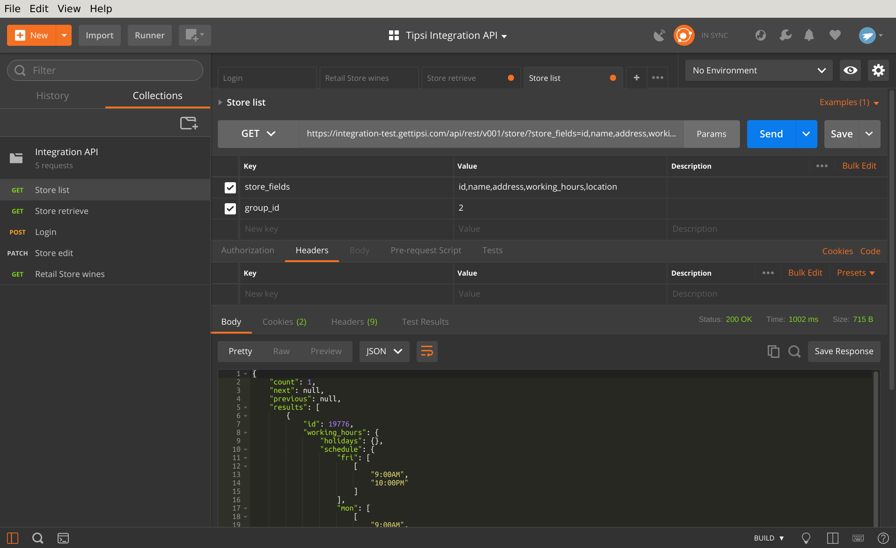
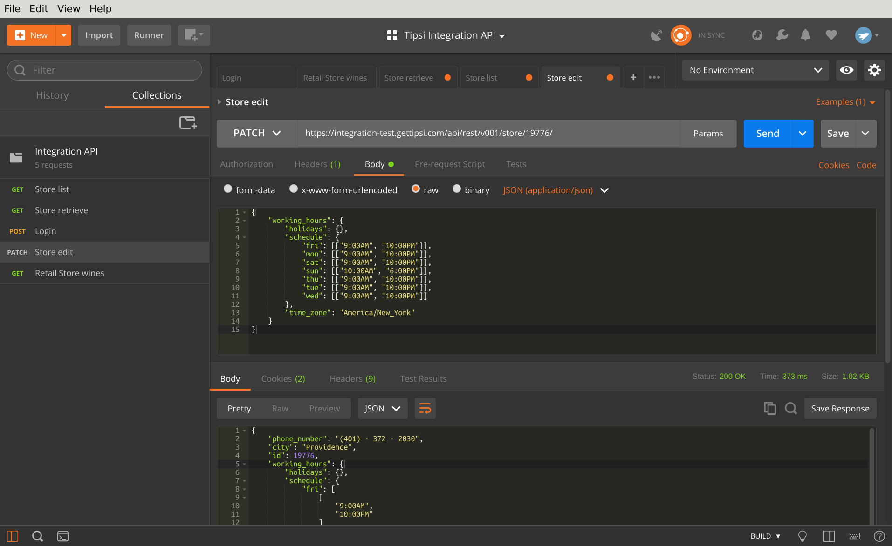

Store Operations¶
List stores¶
GET request to /api/rest/v001/store/?group_id=<GROUP_ID> endpoint will list all retail stores with group_id=GROUP_ID. The endpoints are paginated - they will return a 25 results per page. You can modify page size by passing page_size parameter, but values larger than a 100 will be ignored. By the way, all GET APIs are lazy - by default they will only return object id. Fields should be requested explicitly as GET parameter - a comma separated list of fields for each struct, see StoreSerializerIntegration for the full structs description.
The example below requests wine inventory and nested fields (ids, barcodes, vintage and etc):
Update store¶
Perform PATCH request to store URL https://integration-test.gettipsi.com/api/rest/v001/store/STORE_ID/ Only passed parameters will be modified, as conventionally PATCH performs partial updates, omitted parameters will remain unchanged. Params should be formatted as JSON. Some store fields are read only. For list of available fields please see StoreSerializerIntegration
Example update store working hours
See Store operations for more details.